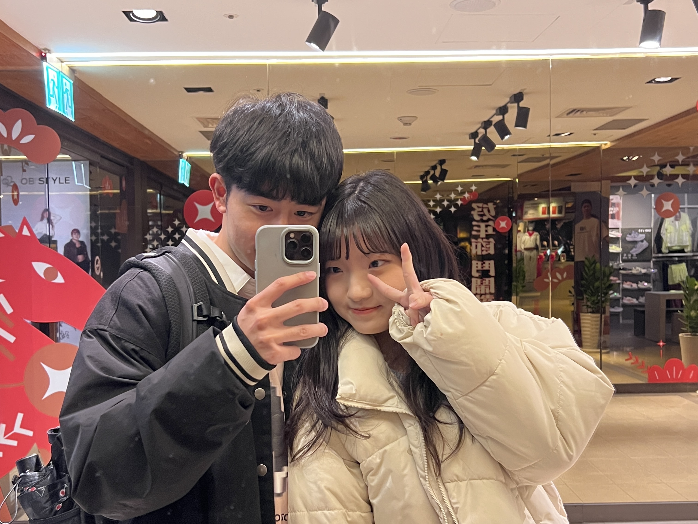
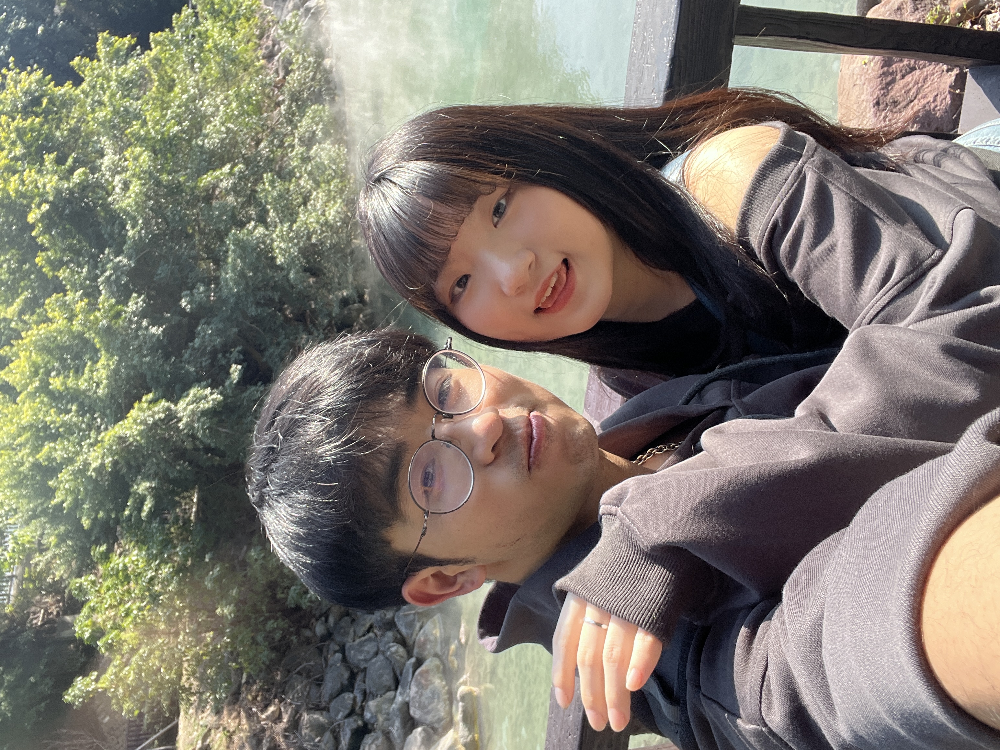
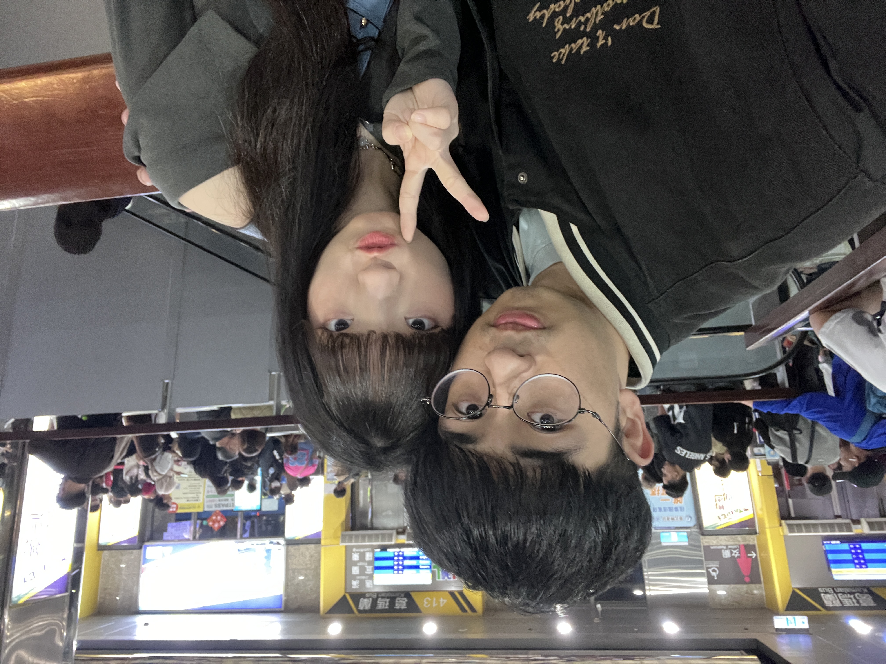
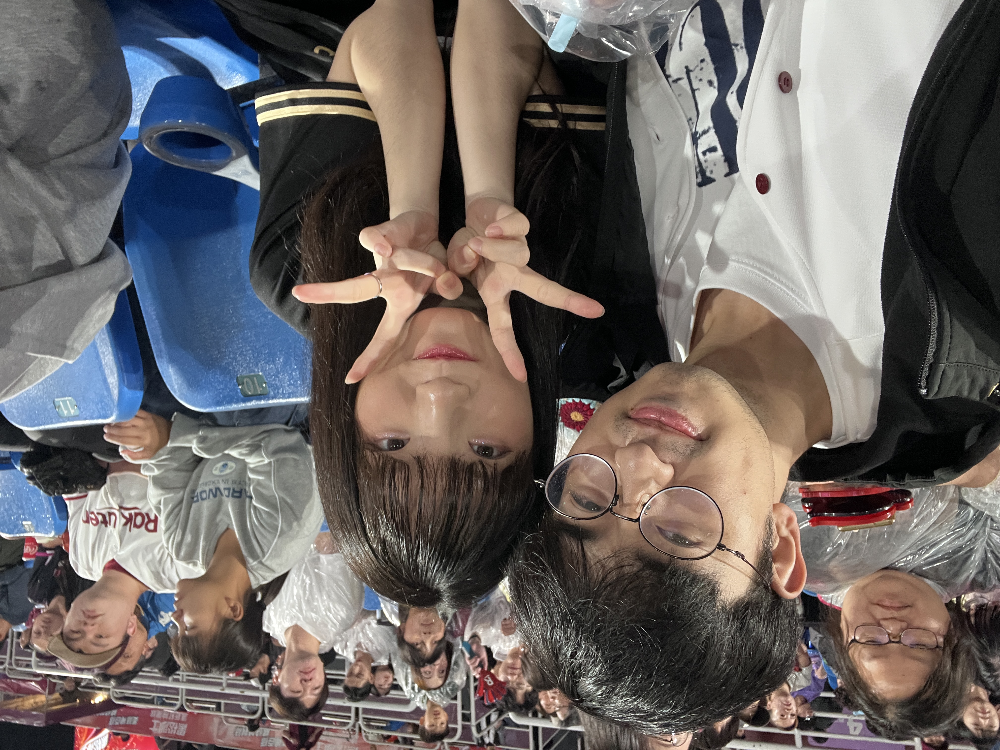
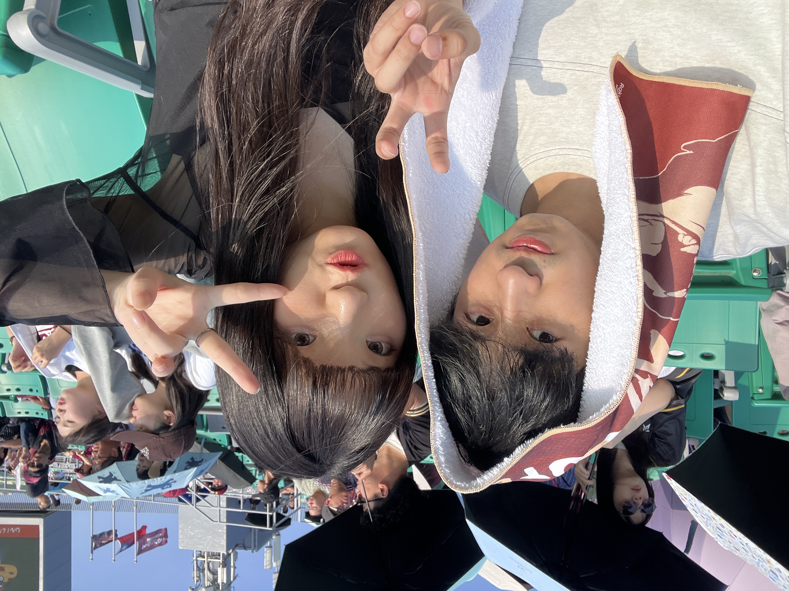

我們的電影
那天第一次一起看電影

《陽光女子合唱團》是我們一起看的第一部電影。和妳一起隨著劇情歡笑、落淚， 那份感動至今仍深深留在我的心裡，也成了我最特別的一段回憶。
OUR STORY
每一張相片代表的回憶，都是這段故事裡最閃亮的光點。

《陽光女子合唱團》是我們一起看的第一部電影。和妳一起隨著劇情歡笑、落淚， 那份感動至今仍深深留在我的心裡，也成了我最特別的一段回憶。

那天天氣正好，我們一起去北投走走， 只是輕鬆地逛了幾個景點，也去了可愛的咖啡廳。原本只是再普通不過的行程，但因為有妳在身邊， 走過的每一個地方都多了一點溫度，也變得特別有趣。

雖然妳總說台中和台北不算遠距離，我一個月也會回來好幾次， 但每次道別時，妳還是會露出依依不捨的模樣，就像一隻捨不得主人離開的小動物。每次看到妳那樣， 我的心也跟著揪了一下，只希望下次見面的日子能快點到來。

那天是妳第一次帶我去球場，還記得妳笑著說要盡地主之誼， 買了好多好吃的給我。雖然因為下雨比賽一度暫停，最後樂天也輸了球， 但那一天的點點滴滴，卻成了我心中最特別、最深刻的一段回憶。

那是我們第一次單獨一起去外縣市旅行。我們走訪了好多景點，也買了球票，一起到亞太球場看了三天的棒球，還吃遍了許多台南美食。那些食物本來就很好吃，但因為有妳陪在身邊， 每一口都變得更加美味，也讓這趟旅程成為我最難忘的回憶。
MEMORIES
點擊照片，重新回到那個瞬間。
TOGETHER
清單會越來越長，因為我們才剛開始而已。
FOR YOU
游采采200天快樂 ❤️
我愛妳，200天快樂。❤️